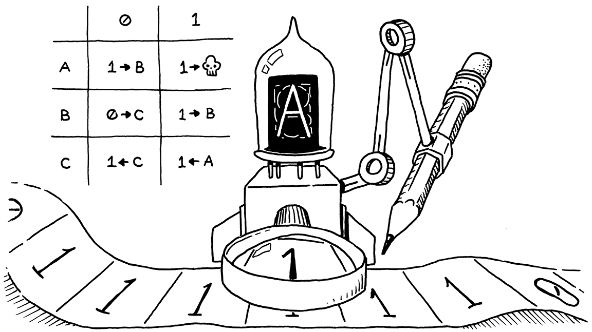

Control Flow
Logic, giống như whiskey, sẽ mất tác dụng có lợi nếu dùng quá nhiều.
Edward John Moreton Drax Plunkett, Lord Dunsany
So với chương trước — một cuộc chạy marathon đầy mệt mỏi — thì hôm nay giống như một buổi dạo chơi nhẹ nhàng giữa cánh đồng hoa cúc. Nhưng dù công việc khá dễ, phần thưởng lại bất ngờ lớn.
Hiện tại, interpreter của chúng ta chẳng khác gì một chiếc máy tính bỏ túi. Một chương trình Lox chỉ có thể thực hiện một lượng công việc cố định trước khi kết thúc. Muốn nó chạy lâu gấp đôi, bạn phải viết source code dài gấp đôi. Chúng ta sắp sửa thay đổi điều đó. Trong chương này, interpreter của chúng ta sẽ tiến một bước lớn để gia nhập “giải đấu lớn” của các ngôn ngữ lập trình: Turing-completeness.
9 . 1Máy Turing (Tóm tắt)
Vào đầu thế kỷ trước, các nhà toán học đã vấp phải một loạt nghịch lý rối rắm khiến họ bắt đầu nghi ngờ sự vững chắc của nền tảng mà họ đã xây dựng. Để giải quyết khủng hoảng đó, họ quay lại điểm xuất phát. Bắt đầu từ một vài tiên đề, logic và lý thuyết tập hợp, họ hy vọng có thể xây dựng lại toán học trên một nền móng không thể bị phá vỡ.
Họ muốn trả lời một cách chặt chẽ những câu hỏi như: “Liệu tất cả các mệnh đề đúng có thể được chứng minh không?”, “Chúng ta có thể tính toán được tất cả các hàm mà ta có thể định nghĩa không?”, hay thậm chí là câu hỏi tổng quát hơn: “Chúng ta thực sự có ý gì khi nói một hàm là ‘computable’?”
Họ cho rằng câu trả lời cho hai câu hỏi đầu tiên sẽ là “có”. Việc còn lại chỉ là chứng minh nó. Nhưng hóa ra câu trả lời cho cả hai lại là “không”, và đáng ngạc nhiên là hai câu hỏi này lại gắn bó chặt chẽ với nhau. Đây là một góc thú vị của toán học, chạm đến những câu hỏi nền tảng về khả năng của bộ não và cách vũ trụ vận hành. Tôi không thể trình bày đầy đủ ở đây.
Điều tôi muốn nhấn mạnh là: trong quá trình chứng minh câu trả lời cho hai câu hỏi đầu tiên là “không”, Alan Turing và Alonzo Church đã đưa ra một câu trả lời chính xác cho câu hỏi cuối cùng — một định nghĩa về những loại hàm nào là computable. Mỗi người đã tạo ra một hệ thống tí hon với lượng “máy móc” tối thiểu nhưng vẫn đủ mạnh để tính toán bất kỳ hàm nào trong một lớp (rất) lớn các hàm.
Ngày nay, đây được xem là các “hàm computable”. Hệ thống của Turing được gọi là máy Turing. Hệ thống của Church là lambda calculus. Cả hai vẫn được dùng rộng rãi làm nền tảng cho các mô hình tính toán, và thực tế là nhiều ngôn ngữ lập trình hàm hiện đại sử dụng lambda calculus làm lõi.
Máy Turing nổi tiếng hơn — chưa có bộ phim Hollywood nào về Alonzo Church — nhưng hai hệ thống này tương đương về sức mạnh. Thực tế, bất kỳ ngôn ngữ lập trình nào có mức độ biểu đạt tối thiểu cũng đủ mạnh để tính toán bất kỳ hàm computable nào.
Bạn có thể chứng minh điều đó bằng cách viết một trình mô phỏng máy Turing trong ngôn ngữ của mình. Vì Turing đã chứng minh máy của ông có thể tính toán bất kỳ hàm computable nào, nên theo đó, ngôn ngữ của bạn cũng có thể. Tất cả những gì bạn cần làm là dịch hàm đó sang máy Turing, rồi chạy nó trên trình mô phỏng của bạn.
Nếu ngôn ngữ của bạn đủ biểu đạt để làm điều đó, nó được xem là Turing-complete. Máy Turing thực ra khá đơn giản, nên không cần nhiều sức mạnh để đạt được điều này. Bạn chỉ cần có phép toán số học, một chút control flow, và khả năng cấp phát và sử dụng (về lý thuyết) lượng bộ nhớ tùy ý. Chúng ta đã có điều đầu tiên. Đến cuối chương này, chúng ta sẽ có điều thứ hai.
9 . 2Conditional Execution (Execute có điều kiện)
Đủ với phần lịch sử rồi, giờ hãy làm cho ngôn ngữ của chúng ta thú vị hơn. Ta có thể chia control flow thành hai loại chính:
-
Conditional hay branching control flow được dùng để không execute một đoạn code nào đó. Theo cách nhìn của lập trình mệnh lệnh, bạn có thể hình dung nó như việc “nhảy vượt qua” một vùng code.
-
Looping control flow execute một đoạn code nhiều hơn một lần. Nó “nhảy lùi lại” để bạn có thể làm lại điều gì đó. Vì bạn thường không muốn vòng lặp vô hạn, nó thường đi kèm một logic điều kiện để biết khi nào cần dừng.
Branching đơn giản hơn, nên ta sẽ bắt đầu từ đây. Các ngôn ngữ họ C có hai tính năng chính để execute có điều kiện: câu lệnh if và toán tử “conditional” được đặt tên rất rõ nghĩa (?:). Câu lệnh if cho phép bạn execute có điều kiện các statement, còn toán tử conditional cho phép bạn execute có điều kiện các expression.
Để đơn giản, Lox không có toán tử conditional, nên hãy bắt đầu với câu lệnh if. Grammar cho statement của chúng ta sẽ có thêm một production mới.
statement → exprStmt | ifStmt | printStmt | block ; ifStmt → "if" "(" expression ")" statement ( "else" statement )? ;
Một câu lệnh if có một expression làm điều kiện, sau đó là một statement sẽ được execute nếu điều kiện là truthy. Tùy chọn, nó cũng có thể có từ khóa else và một statement sẽ được execute nếu điều kiện là falsey. Node của syntax tree sẽ có các field cho cả ba phần này.
"Expression : Expr expression",
in main()
"If : Expr condition, Stmt thenBranch," + " Stmt elseBranch",
"Print : Expr expression",
Giống như các statement khác, parser nhận biết một câu lệnh if bằng từ khóa if ở đầu.
private Stmt statement() {
in statement()
if (match(IF)) return ifStatement();
if (match(PRINT)) return printStatement();
Khi gặp nó, parser sẽ gọi method mới này để parse phần còn lại:
add after statement()
private Stmt ifStatement() { consume(LEFT_PAREN, "Expect '(' after 'if'."); Expr condition = expression(); consume(RIGHT_PAREN, "Expect ')' after if condition."); Stmt thenBranch = statement(); Stmt elseBranch = null; if (match(ELSE)) { elseBranch = statement(); } return new Stmt.If(condition, thenBranch, elseBranch); }
Như thường lệ, code parse bám sát grammar. Nó phát hiện một else clause bằng cách tìm từ khóa else ngay trước đó. Nếu không có, field elseBranch trong syntax tree sẽ là null.
Tùy chọn else tưởng chừng vô hại này thực ra đã mở ra một điểm mơ hồ trong grammar. Hãy xem ví dụ:
if (first) if (second) whenTrue(); else whenFalse();
Câu đố là: else clause đó thuộc về câu lệnh if nào? Đây không chỉ là câu hỏi lý thuyết về cách ta ghi grammar, mà nó thực sự ảnh hưởng đến cách code chạy:
-
Nếu ta gắn else vào câu lệnh
ifđầu tiên, thìwhenFalse()sẽ được gọi nếufirstlà falsey, bất kểsecondcó giá trị gì. -
Nếu ta gắn nó vào câu lệnh
ifthứ hai, thìwhenFalse()chỉ được gọi nếufirstlà truthy vàsecondlà falsey.
Vì else clause là tùy chọn, và không có ký hiệu phân tách rõ ràng đánh dấu kết thúc câu lệnh if, grammar sẽ trở nên mơ hồ khi bạn lồng các if theo cách này. Đây là một cạm bẫy kinh điển của cú pháp, được gọi là vấn đề dangling else.

Hoàn toàn có thể định nghĩa một context-free grammar để tránh sự mơ hồ này một cách trực tiếp, nhưng điều đó đòi hỏi phải tách hầu hết các rule cho statement thành từng cặp: một loại cho phép if có else và một loại không. Khá là phiền phức.
Thay vào đó, hầu hết các ngôn ngữ và parser đều tránh vấn đề này theo cách ad hoc. Dù họ dùng “mẹo” gì để thoát khỏi rắc rối, họ luôn chọn cùng một cách diễn giải — else sẽ gắn với câu lệnh if gần nhất đứng trước nó.
Parser của chúng ta thật tiện lợi khi đã làm đúng như vậy. Vì ifStatement() luôn chủ động tìm else trước khi trả về, nên lời gọi sâu nhất trong chuỗi if lồng nhau sẽ “giành” else clause cho mình trước khi trả quyền điều khiển về các câu lệnh if bên ngoài.
Giờ đã có cú pháp trong tay, chúng ta sẵn sàng để interpret.
add after visitExpressionStmt()
@Override public Void visitIfStmt(Stmt.If stmt) { if (isTruthy(evaluate(stmt.condition))) { execute(stmt.thenBranch); } else if (stmt.elseBranch != null) { execute(stmt.elseBranch); } return null; }
Phần implement trong interpreter chỉ là một lớp bọc mỏng quanh chính đoạn code Java tương ứng. Nó sẽ evaluate điều kiện. Nếu điều kiện là truthy, nó execute then branch. Ngược lại, nếu có else branch, nó sẽ execute phần đó.
Nếu bạn so sánh đoạn code này với cách interpreter xử lý các cú pháp khác mà ta đã implement, điểm khiến control flow trở nên đặc biệt chính là câu lệnh if của Java. Hầu hết các syntax tree khác luôn evaluate toàn bộ subtree của chúng. Ở đây, ta có thể không evaluate then hoặc else statement. Nếu một trong hai có side effect, việc không evaluate nó sẽ trở nên “thấy được” đối với người dùng.
9 . 3Logical Operators
Vì chúng ta không có toán tử conditional, bạn có thể nghĩ rằng phần branching đã xong, nhưng chưa đâu. Ngay cả khi không có toán tử ternary, vẫn còn hai toán tử khác về mặt kỹ thuật cũng là control flow construct — đó là các logical operator and và or.
Chúng không giống các binary operator khác vì chúng short-circuit. Nếu sau khi evaluate toán hạng bên trái mà ta đã biết kết quả của biểu thức logic sẽ là gì, thì ta sẽ không evaluate toán hạng bên phải nữa. Ví dụ:
false and sideEffect();
Với một biểu thức and để ra kết quả truthy, cả hai toán hạng phải truthy. Ngay khi evaluate toán hạng bên trái là false, ta biết điều kiện đó không thể xảy ra, nên không cần evaluate sideEffect() và nó sẽ bị bỏ qua.
Đây là lý do tại sao ta không implement logical operator cùng với các binary operator khác. Giờ thì ta đã sẵn sàng. Hai toán tử mới này nằm khá thấp trong bảng precedence. Tương tự như || và && trong C, mỗi toán tử có precedence riêng, với or thấp hơn and. Ta sẽ đặt chúng ngay giữa assignment và equality.
expression → assignment ; assignment → IDENTIFIER "=" assignment | logic_or ; logic_or → logic_and ( "or" logic_and )* ; logic_and → equality ( "and" equality )* ;
Thay vì quay về equality, giờ assignment sẽ chuyển tiếp sang logic_or. Hai rule mới, logic_or và logic_and, tương tự như các binary operator khác. Sau đó, logic_and sẽ gọi equality cho các toán hạng của nó, và từ đó ta nối lại với phần còn lại của các rule expression.
Chúng ta có thể tái sử dụng class Expr.Binary hiện có cho hai expression mới này vì chúng có cùng các field. Nhưng khi đó, visitBinaryExpr() sẽ phải kiểm tra xem operator có phải là logical operator không và dùng một nhánh code khác để xử lý short-circuit. Tôi nghĩ sẽ gọn gàng hơn nếu định nghĩa một class mới cho các toán tử này để chúng có visit method riêng.
"Literal : Object value",
in main()
"Logical : Expr left, Token operator, Expr right",
"Unary : Token operator, Expr right",
Để đưa các expression mới này vào parser, trước tiên ta thay đổi code parse cho assignment để gọi or().
private Expr assignment() {
in assignment()
replace 1 line
Expr expr = or();
if (match(EQUAL)) {
Code để parse một chuỗi các biểu thức or giống với các binary operator khác.
add after assignment()
private Expr or() { Expr expr = and(); while (match(OR)) { Token operator = previous(); Expr right = and(); expr = new Expr.Logical(expr, operator, right); } return expr; }
Các toán hạng của nó sẽ là cấp precedence cao hơn tiếp theo — biểu thức and mới.
add after or()
private Expr and() { Expr expr = equality(); while (match(AND)) { Token operator = previous(); Expr right = equality(); expr = new Expr.Logical(expr, operator, right); } return expr; }
Biểu thức này sẽ gọi equality() cho các toán hạng của nó, và như vậy, parser cho expression đã được nối kết đầy đủ trở lại. Giờ ta sẵn sàng để interpret.
add after visitLiteralExpr()
@Override public Object visitLogicalExpr(Expr.Logical expr) { Object left = evaluate(expr.left); if (expr.operator.type == TokenType.OR) { if (isTruthy(left)) return left; } else { if (!isTruthy(left)) return left; } return evaluate(expr.right); }
Nếu bạn so sánh đoạn này với method visitBinaryExpr() trong chương trước, bạn sẽ thấy sự khác biệt. Ở đây, chúng ta evaluate toán hạng bên trái trước. Ta xem giá trị của nó để quyết định có thể short-circuit hay không. Nếu không, và chỉ khi đó, ta mới evaluate toán hạng bên phải.
Điểm thú vị khác ở đây là quyết định giá trị thực sự sẽ trả về. Vì Lox là ngôn ngữ dynamically typed, chúng ta cho phép toán hạng thuộc bất kỳ kiểu nào và dùng truthiness để xác định ý nghĩa của mỗi toán hạng. Ta áp dụng cùng cách suy luận đó cho kết quả. Thay vì hứa sẽ trả về đúng true hoặc false, một logic operator chỉ đảm bảo rằng nó sẽ trả về một giá trị có truthiness phù hợp.
May mắn thay, chúng ta đã có sẵn các giá trị với truthiness đúng — chính là kết quả của các toán hạng. Vậy nên ta dùng luôn chúng. Ví dụ:
print "hi" or 2; // "hi". print nil or "yes"; // "yes".
Ở dòng đầu tiên, "hi" là truthy, nên or short-circuit và trả về giá trị đó. Ở dòng thứ hai, nil là falsey, nên nó evaluate và trả về toán hạng thứ hai, "yes".
Vậy là chúng ta đã bao quát hết các primitive branching trong Lox. Giờ thì sẵn sàng “nhảy” sang vòng lặp. Thấy tôi chơi chữ chứ? Jump. Ahead. Hiểu không? Ý là… thôi, bỏ qua đi.
9 . 4While Loops
Lox có hai câu lệnh looping control flow: while và for. Vòng lặp while đơn giản hơn, nên ta sẽ bắt đầu từ đây. Grammar của nó giống hệt C.
statement → exprStmt | ifStmt | printStmt | whileStmt | block ; whileStmt → "while" "(" expression ")" statement ;
Ta thêm một nhánh mới vào rule statement trỏ đến rule mới cho while. Nó bắt đầu bằng từ khóa while, theo sau là một biểu thức điều kiện đặt trong ngoặc đơn, rồi đến một statement cho phần thân vòng lặp. Rule grammar mới này sẽ có một node trong syntax tree.
"Print : Expr expression",
"Var : Token name, Expr initializer",
in main()
add “,” to previous line
"While : Expr condition, Stmt body"
));
Node này lưu trữ điều kiện và phần thân. Ở đây bạn có thể thấy lý do tại sao việc tách riêng base class cho expression và statement lại hữu ích. Các khai báo field cho thấy rõ ràng điều kiện là một expression và phần thân là một statement.
Bên phía parser, ta làm theo đúng quy trình đã dùng cho câu lệnh if. Đầu tiên, ta thêm một case mới trong statement() để phát hiện và khớp từ khóa ở đầu.
if (match(PRINT)) return printStatement();
in statement()
if (match(WHILE)) return whileStatement();
if (match(LEFT_BRACE)) return new Stmt.Block(block());
Việc xử lý thực sự được giao cho method này:
add after varDeclaration()
private Stmt whileStatement() { consume(LEFT_PAREN, "Expect '(' after 'while'."); Expr condition = expression(); consume(RIGHT_PAREN, "Expect ')' after condition."); Stmt body = statement(); return new Stmt.While(condition, body); }
Grammar này cực kỳ đơn giản và đây là bản dịch thẳng của nó sang Java. Nói đến dịch thẳng sang Java, đây là cách ta execute cú pháp mới:
add after visitVarStmt()
@Override public Void visitWhileStmt(Stmt.While stmt) { while (isTruthy(evaluate(stmt.condition))) { execute(stmt.body); } return null; }
Giống như visit method cho if, visitor này dùng chính tính năng tương ứng của Java. Method này không phức tạp, nhưng nó khiến Lox mạnh mẽ hơn nhiều. Giờ ta có thể viết một chương trình mà thời gian chạy không còn bị giới hạn nghiêm ngặt bởi độ dài của source code.
9 . 5For Loops
Chúng ta đã đến control flow construct cuối cùng, Ye Olde vòng lặp for kiểu C. Có lẽ tôi không cần nhắc bạn, nhưng nó trông như thế này:
for (var i = 0; i < 10; i = i + 1) print i;
Theo ngôn ngữ grammar, nó là:
statement → exprStmt | forStmt | ifStmt | printStmt | whileStmt | block ; forStmt → "for" "(" ( varDecl | exprStmt | ";" ) expression? ";" expression? ")" statement ;
Bên trong dấu ngoặc đơn, bạn có ba mệnh đề được phân tách bằng dấu chấm phẩy:
-
Mệnh đề đầu tiên là initializer. Nó được execute đúng một lần, trước mọi thứ khác. Thông thường nó là một expression, nhưng để tiện lợi, chúng ta cũng cho phép một khai báo biến. Trong trường hợp đó, biến sẽ có scope trong phần còn lại của vòng lặp
for— tức hai mệnh đề còn lại và phần thân. -
Tiếp theo là condition. Giống như trong vòng lặp
while, expression này kiểm soát thời điểm thoát vòng lặp. Nó được evaluate một lần ở đầu mỗi lượt lặp, bao gồm cả lượt đầu tiên. Nếu kết quả là truthy, nó execute phần thân vòng lặp. Ngược lại, nó sẽ thoát. -
Mệnh đề cuối cùng là increment. Đây là một expression tùy ý làm một việc nào đó ở cuối mỗi lượt lặp. Kết quả của expression sẽ bị bỏ đi, vì thế để có ích thì nó phải có side effect. Trên thực tế, nó thường tăng giá trị của một biến.
Bất kỳ mệnh đề nào trong số này cũng có thể được lược bỏ. Sau dấu ngoặc đơn đóng là một statement cho phần thân, thường là một block.
9 . 5 . 1Desugaring
Khá nhiều “máy móc”, nhưng lưu ý rằng không có phần nào làm những việc mà bạn không thể làm với các câu lệnh chúng ta đã có. Nếu vòng lặp for không hỗ trợ mệnh đề initializer, bạn có thể đặt expression initializer trước câu lệnh for. Không có mệnh đề increment, bạn chỉ việc đặt expression increment ở cuối phần thân.
Nói cách khác, Lox không cần vòng lặp for, chỉ là nó khiến một số mẫu code thường gặp trở nên dễ viết hơn. Những tính năng kiểu này được gọi là syntactic sugar. Ví dụ, vòng lặp for trước đó có thể được viết lại như sau:
{
var i = 0;
while (i < 10) {
print i;
i = i + 1;
}
}
Script này có semantics giống hệt với script trước đó, dù nhìn không “mát mắt” bằng. Những tính năng syntactic sugar như vòng lặp for của Lox khiến ngôn ngữ dễ chịu và hiệu quả hơn khi làm việc. Nhưng đặc biệt trong các implementation ngôn ngữ tinh vi, mỗi tính năng cần hỗ trợ và tối ưu ở back-end đều tốn kém.
Chúng ta có thể “vừa ăn bánh vừa giữ bánh” bằng cách desugaring. Từ ngữ vui tai này mô tả quá trình trong đó front end nhận code dùng cú pháp sugar và dịch nó sang một dạng nguyên thủy hơn mà back end đã biết cách execute.
Chúng ta sẽ desugar vòng lặp for thành vòng lặp while và các câu lệnh khác mà interpreter đã xử lý được. Trong interpreter đơn giản của chúng ta, desugaring thật ra không tiết kiệm được bao nhiêu công, nhưng nó cho tôi cái cớ để giới thiệu bạn với kỹ thuật này. Vì vậy, khác với các câu lệnh trước, chúng ta sẽ không thêm một node mới vào syntax tree. Thay vào đó, ta đi thẳng vào parsing. Đầu tiên, thêm một import mà ta sắp cần.
import java.util.ArrayList;
import java.util.Arrays;
import java.util.List;
Giống như mọi câu lệnh khác, ta bắt đầu parse một vòng lặp for bằng cách khớp từ khóa của nó.
private Stmt statement() {
in statement()
if (match(FOR)) return forStatement();
if (match(IF)) return ifStatement();
Giờ thì thú vị đây. Việc desugaring sẽ diễn ra ở đây, nên ta sẽ xây dựng method này từng phần, bắt đầu bằng dấu ngoặc mở trước các mệnh đề.
add after statement()
private Stmt forStatement() { consume(LEFT_PAREN, "Expect '(' after 'for'."); // More here... }
Mệnh đề đầu tiên sau đó là initializer.
consume(LEFT_PAREN, "Expect '(' after 'for'.");
in forStatement()
replace 1 line
Stmt initializer; if (match(SEMICOLON)) { initializer = null; } else if (match(VAR)) { initializer = varDeclaration(); } else { initializer = expressionStatement(); }
}
Nếu token ngay sau ( là dấu chấm phẩy thì initializer đã bị lược bỏ. Ngược lại, ta kiểm tra từ khóa var để xem đó có phải là một khai báo variable hay không. Nếu không rơi vào trường hợp nào, chắc chắn đó là một expression. Ta parse nó và bọc nó trong một expression statement để initializer luôn có kiểu Stmt.
Tiếp theo là phần điều kiện.
initializer = expressionStatement();
}
in forStatement()
Expr condition = null;
if (!check(SEMICOLON)) {
condition = expression();
}
consume(SEMICOLON, "Expect ';' after loop condition.");
}
Một lần nữa, ta kiểm tra dấu chấm phẩy để xem mệnh đề này có bị lược bỏ hay không. Mệnh đề cuối cùng là phần increment.
consume(SEMICOLON, "Expect ';' after loop condition.");
in forStatement()
Expr increment = null;
if (!check(RIGHT_PAREN)) {
increment = expression();
}
consume(RIGHT_PAREN, "Expect ')' after for clauses.");
}
Nó giống với mệnh đề điều kiện, chỉ khác là mệnh đề này kết thúc bằng dấu ngoặc đơn đóng. Phần còn lại chỉ là body.
consume(RIGHT_PAREN, "Expect ')' after for clauses.");
in forStatement()
Stmt body = statement(); return body;
}
Chúng ta đã parse xong tất cả các phần của vòng lặp for và các AST node kết quả đang nằm trong một vài biến local của Java. Đây là lúc desugaring xuất hiện. Ta lấy chúng và dùng để tạo ra các node của syntax tree thể hiện semantics của vòng lặp for, giống như ví dụ “tự desugar bằng tay” mà tôi đã cho bạn xem trước đó.
Code sẽ đơn giản hơn một chút nếu ta làm ngược lại, nên ta bắt đầu với mệnh đề increment.
Stmt body = statement();
in forStatement()
if (increment != null) { body = new Stmt.Block( Arrays.asList( body, new Stmt.Expression(increment))); }
return body;
Phần increment, nếu có, sẽ chạy sau body ở mỗi vòng lặp. Ta làm điều đó bằng cách thay thế body bằng một block nhỏ chứa body gốc, sau đó là một expression statement để evaluate phần increment.
}
in forStatement()
if (condition == null) condition = new Expr.Literal(true); body = new Stmt.While(condition, body);
return body;
Tiếp theo, ta lấy điều kiện và body để tạo vòng lặp bằng while loop nguyên thủy. Nếu điều kiện bị lược bỏ, ta chèn true để tạo vòng lặp vô hạn.
body = new Stmt.While(condition, body);
in forStatement()
if (initializer != null) { body = new Stmt.Block(Arrays.asList(initializer, body)); }
return body;
Cuối cùng, nếu có initializer, nó sẽ chạy một lần trước toàn bộ vòng lặp. Ta làm điều đó bằng cách, một lần nữa, thay thế toàn bộ statement bằng một block chạy initializer rồi execute vòng lặp.
Vậy là xong. Interpreter của chúng ta giờ đã hỗ trợ vòng lặp for kiểu C mà không cần đụng gì đến class Interpreter. Vì ta đã desugar thành các node mà interpreter vốn đã biết cách visit, nên không còn việc gì phải làm thêm.
Cuối cùng, Lox đã đủ mạnh để giải trí cho chúng ta, ít nhất là vài phút. Đây là một chương trình nhỏ in ra 21 phần tử đầu tiên của dãy Fibonacci:
var a = 0; var temp; for (var b = 1; a < 10000; b = temp + b) { print a; temp = a; a = b; }
Challenges
-
Vài chương nữa, khi Lox hỗ trợ first-class function và dynamic dispatch, về mặt kỹ thuật chúng ta sẽ không cần các câu lệnh branching được tích hợp sẵn trong ngôn ngữ. Hãy chỉ ra cách execute có điều kiện có thể được triển khai dựa trên những tính năng đó. Nêu tên một ngôn ngữ sử dụng kỹ thuật này cho control flow của nó.
-
Tương tự, looping cũng có thể được triển khai bằng những công cụ đó, miễn là interpreter của chúng ta hỗ trợ một tối ưu hóa quan trọng. Đó là gì, và tại sao nó lại cần thiết? Nêu tên một ngôn ngữ sử dụng kỹ thuật này cho iteration.
-
Không giống Lox, hầu hết các ngôn ngữ kiểu C khác cũng hỗ trợ câu lệnh
breakvàcontinuebên trong vòng lặp. Hãy thêm hỗ trợ cho câu lệnhbreak.Cú pháp là từ khóa
breaktheo sau bởi dấu chấm phẩy. Sẽ là lỗi cú pháp nếu có câu lệnhbreakxuất hiện bên ngoài bất kỳ vòng lặp bao quanh nào. Khi runtime gặp câu lệnhbreak, nó sẽ nhảy đến cuối vòng lặp bao quanh gần nhất và tiếp tục từ đó. Lưu ý rằngbreakcó thể nằm lồng bên trong các block hoặc câu lệnhifkhác cũng cần được thoát ra.
Design Note: Spoonfuls of Syntactic Sugar
Khi bạn thiết kế ngôn ngữ của riêng mình, bạn sẽ chọn lượng syntactic sugar để “rót” vào grammar. Bạn sẽ tạo ra một món ăn “healthy” không đường, nơi mỗi thao tác semantics ánh xạ 1-1 với một đơn vị cú pháp, hay một món tráng miệng ngọt ngào, nơi mỗi hành vi có thể được diễn đạt theo mười cách khác nhau? Các ngôn ngữ thành công tồn tại ở mọi điểm trên phổ này.
Ở cực tối giản là những ngôn ngữ có cú pháp tối thiểu đến mức khắc nghiệt như Lisp, Forth và Smalltalk. Dân Lisp nổi tiếng với câu “ngôn ngữ của họ không có cú pháp”, trong khi dân Smalltalk tự hào cho thấy bạn có thể nhét toàn bộ grammar lên một tấm thẻ ghi chú. Trường phái này tin rằng ngôn ngữ không cần syntactic sugar. Thay vào đó, cú pháp và semantics tối giản mà nó cung cấp đủ mạnh để code trong thư viện có thể biểu đạt như thể nó là một phần của ngôn ngữ.
Gần đó là các ngôn ngữ như C, Lua và Go. Chúng hướng tới sự đơn giản và rõ ràng hơn là tối giản tuyệt đối. Một số, như Go, cố tình tránh cả syntactic sugar lẫn khả năng mở rộng cú pháp như nhóm trước. Chúng muốn cú pháp không cản trở semantics, nên tập trung giữ cho cả grammar và thư viện đơn giản. Code nên rõ ràng hơn là đẹp đẽ.
Ở khoảng giữa, bạn có các ngôn ngữ như Java, C# và Python. Rồi dần dần bạn sẽ gặp Ruby, C++, Perl và D — những ngôn ngữ nhồi nhét quá nhiều cú pháp vào grammar đến mức gần như hết ký tự dấu câu trên bàn phím.
Ở một mức độ nào đó, vị trí trên phổ này có liên quan đến tuổi đời. Việc thêm chút syntactic sugar ở các bản phát hành sau tương đối dễ dàng. Cú pháp mới thường được đón nhận, và ít có khả năng phá vỡ chương trình hiện có hơn so với việc thay đổi semantics. Một khi đã thêm vào, bạn không thể gỡ bỏ, nên các ngôn ngữ có xu hướng “ngọt” dần theo thời gian. Một trong những lợi ích lớn của việc tạo ra một ngôn ngữ mới từ đầu là bạn có cơ hội cạo bỏ những lớp “kem” tích tụ và bắt đầu lại.
Syntactic sugar thường bị giới PL intelligentsia đánh giá thấp. Có một “niềm đam mê” thực sự với chủ nghĩa tối giản trong nhóm này. Điều đó cũng có lý do: cú pháp được thiết kế kém, không cần thiết sẽ làm tăng gánh nặng nhận thức mà không thêm đủ khả năng biểu đạt để xứng đáng. Vì luôn có áp lực nhồi nhét tính năng mới vào ngôn ngữ, cần có kỷ luật và tập trung vào sự đơn giản để tránh phình to. Một khi đã thêm cú pháp, bạn sẽ phải sống chung với nó, nên tốt nhất là tiết kiệm.
Đồng thời, hầu hết các ngôn ngữ thành công đều có grammar khá phức tạp, ít nhất là khi chúng được sử dụng rộng rãi. Lập trình viên dành rất nhiều thời gian trong ngôn ngữ họ chọn, và một vài tiện ích nhỏ ở đây đó thực sự có thể cải thiện sự thoải mái và hiệu quả công việc.
Tìm được sự cân bằng hợp lý — chọn mức độ “ngọt” phù hợp cho ngôn ngữ của bạn — phụ thuộc vào gu thẩm mỹ của chính bạn.